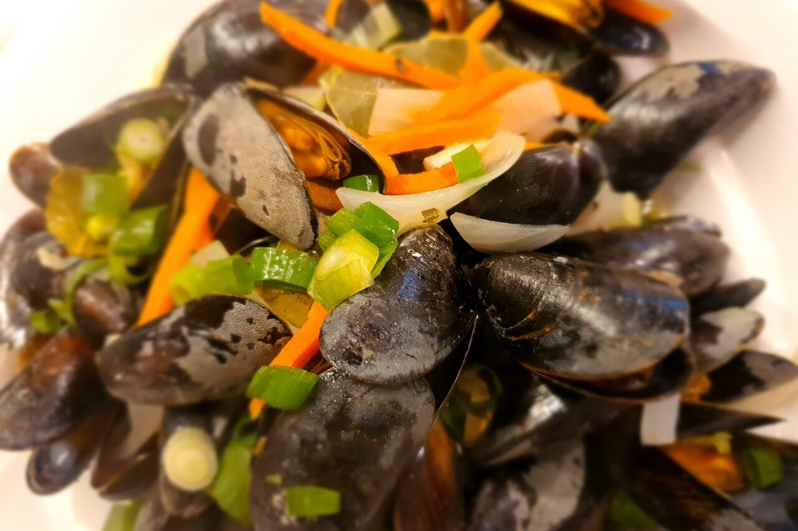
| 営業時間 | 火〜土 17:00〜22:00 |
|---|---|
| 定休日 | 日・月 |
| 住所 | Beestenmarkt 36, 2611 GC Delft |
| 予約 | 推奨 — ☎ +31 15 213 1782 ／ 公式サイト |
| 乳児連れ | ベビーカー: 未確認 ／ ハイチェア: 未確認 ／ おむつ替え台: 未確認 (出典) |
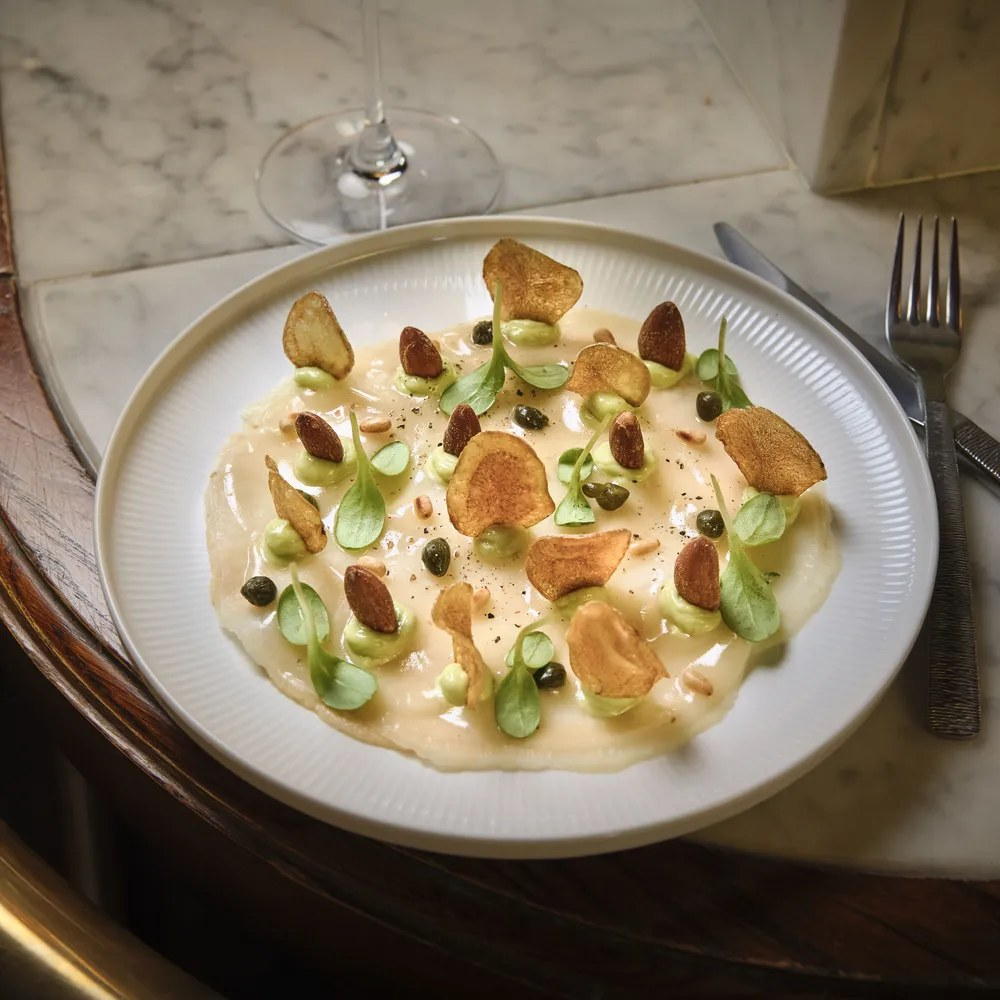
| 営業時間 | 昼 金・土 12:00〜15:00／夜 水〜土 18:00〜22:00 |
|---|---|
| 定休日 | 日・月・火（夏季休暇あり） |
| 住所 | Heilige Geestkerkhof 3, 2611 HP Delft |
| 予約 | 推奨 — ☎ +31 15 213 0433 ／ 公式サイト |
| 乳児連れ | ベビーカー: 未確認 ／ ハイチェア: 未確認 ／ おむつ替え台: 未確認 (出典) |
| 営業時間 | 水・木・土・日 18:00〜／金 19:00〜（7〜8月は金土日のみ） |
|---|---|
| 定休日 | 月・火 |
| 住所 | Molslaan 104, 2611 RP Delft |
| 予約 | 要 — ☎ +31 15 212 1343 ／ 公式サイト |
| 乳児連れ | ベビーカー: 未確認 ／ ハイチェア: 未確認 ／ おむつ替え台: 未確認 |
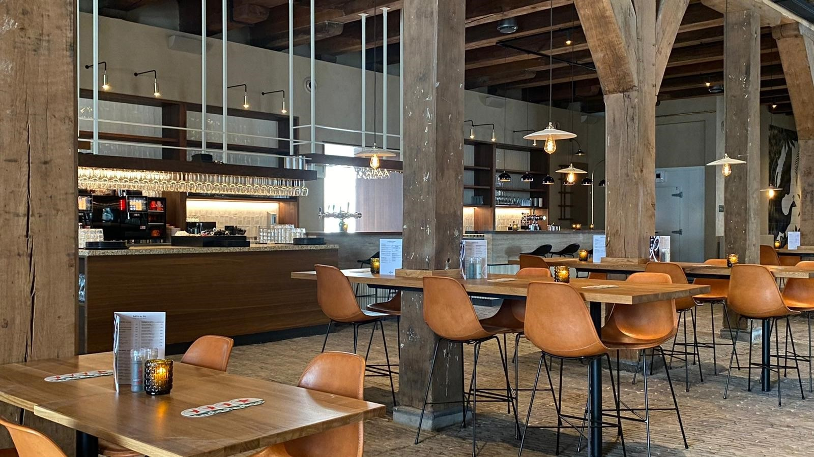
| 営業時間 | 月 16:00〜21:30／火〜木・日 11:30〜21:30／金・土 11:30〜22:00 |
|---|---|
| 定休日 | なし |
| 住所 | Korte Geer 1A, 2611 CA Delft |
| 予約 | 推奨 — ☎ +31 15 666 7700 ／ 公式サイト |
| 乳児連れ | ベビーカー: 未確認 ／ ハイチェア: 未確認 ／ おむつ替え台: 未確認 (出典) |
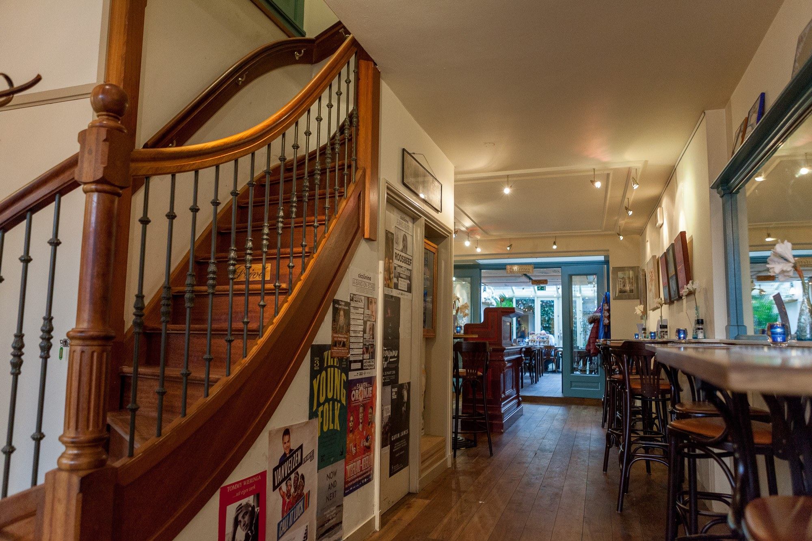
| 営業時間 | 月〜土 9:00〜17:00／日 11:00〜17:00 |
|---|---|
| 定休日 | なし |
| 住所 | Oude Delft 133, 2611 BE Delft |
| 予約 | 可 — ☎ +31 15 212 4625 ／ 公式サイト |
| 乳児連れ | ベビーカー: 未確認 ／ ハイチェア: 未確認 ／ おむつ替え台: 未確認 (出典) |
| 営業時間 | 月〜木 16:00〜23:00／金 16:00〜翌1:00／土 13:00〜翌1:00／日 13:00〜23:00 |
|---|---|
| 定休日 | なし |
| 住所 | Voorstraat 9, 2611 JJ Delft |
| 予約 | 推奨 — ☎ +31 15 214 0916 ／ 公式サイト |
| 乳児連れ | ベビーカー: 未確認 ／ ハイチェア: 未確認 ／ おむつ替え台: 未確認 |
| 営業時間 | 毎日 11:00〜深夜（月〜翌1:00、金土〜翌3:00）／キッチン 11:00〜21:30 |
|---|---|
| 定休日 | なし |
| 住所 | Heilige Geestkerkhof 4, 2611 HP Delft |
| 予約 | 可 — ☎ +31 15 214 5363 ／ 公式サイト |
| 乳児連れ | ベビーカー: 未確認 ／ ハイチェア: 未確認 ／ おむつ替え台: 未確認 |
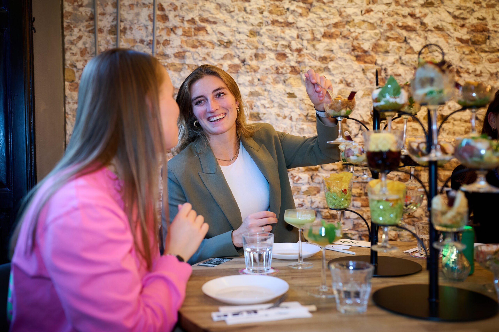
| 営業時間 | 月〜木 12:00〜24:00／金・土 11:00〜翌1:00／日 12:00〜23:00（Wanderlog掲載） |
|---|---|
| 定休日 | なし |
| 住所 | Markt 15-17a, 2611 GP Delft |
| 予約 | 推奨 — ☎ +31 15 213 4996 ／ 公式サイト |
| 乳児連れ | ベビーカー: 未確認 ／ ハイチェア: 未確認 ／ おむつ替え台: 未確認 |
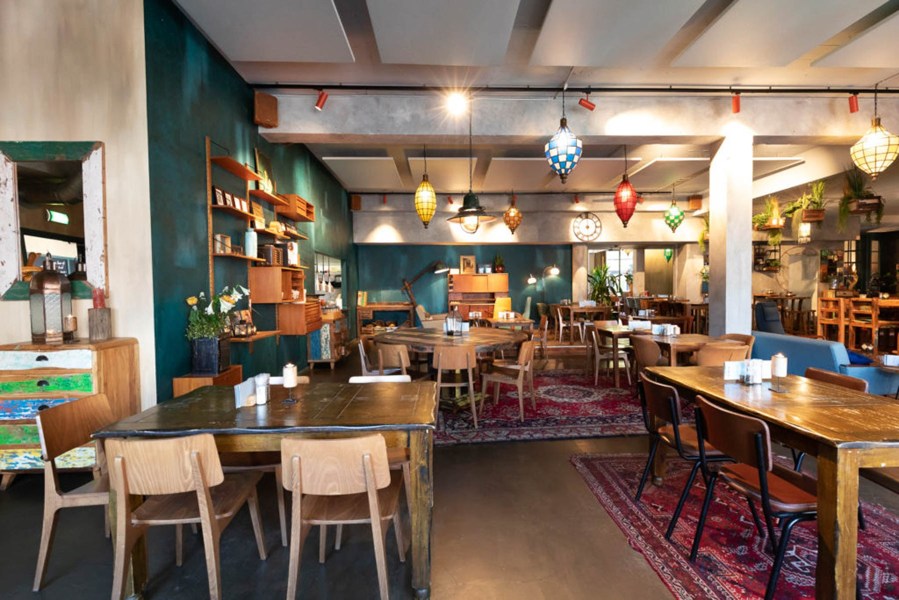
| 営業時間 | 日〜木 9:30〜23:30／金・土 9:30〜24:00 |
|---|---|
| 定休日 | なし |
| 住所 | Hippolytusbuurt 14, 2611 HN Delft |
| 予約 | 推奨 — ☎ +31 15 750 3243 ／ 公式サイト |
| 乳児連れ | ベビーカー: 未確認 ／ ハイチェア: 未確認 ／ おむつ替え台: 未確認 (出典) |
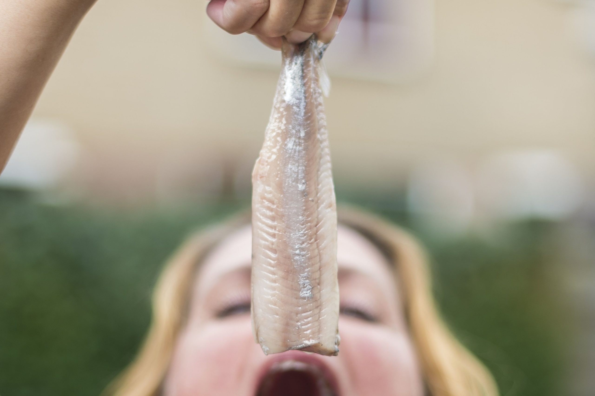
| 営業時間 | 木 9:00〜17:00（デルフトの市） |
|---|---|
| 定休日 | 木曜以外（デルフトでは） |
| 住所 | Markt & Brabantse Turfmarkt, 2611 HM Delft（木曜市内） |
| 予約 | 不要 — 公式サイト |
| 乳児連れ | ベビーカー: 未確認 ／ ハイチェア: 未確認 ／ おむつ替え台: 未確認 |
| 営業時間 | 木 8:00〜17:00（デルフトの市） |
|---|---|
| 定休日 | 木曜以外（デルフトでは） |
| 住所 | Markt, Delft（木曜市内） |
| 予約 | 不要 — 公式サイト |
| 乳児連れ | ベビーカー: 未確認 ／ ハイチェア: 未確認 ／ おむつ替え台: 未確認 |
| 営業時間 | 火・水 11:30〜18:00／木・土 11:30〜18:30／金 11:30〜19:30／日 12:00〜18:00 |
|---|---|
| 定休日 | 月 |
| 住所 | Jacob Gerritstraat 4, 2611 ES Delft |
| 予約 | 不要 — ☎ +31 6 81818725 ／ 公式サイト |
| 乳児連れ | ベビーカー: 未確認 ／ ハイチェア: 未確認 ／ おむつ替え台: 未確認 |
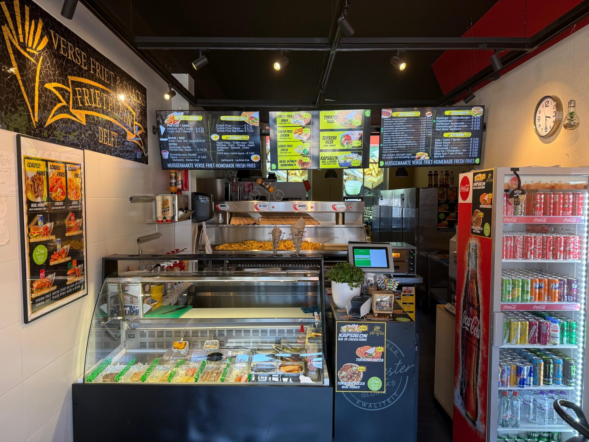
| 営業時間 | 月・水・木・土・日 11:30〜19:00／金 11:30〜19:30（夏季・混雑時は延長） |
|---|---|
| 定休日 | 火 |
| 住所 | Markt 16a, 2611 GT Delft |
| 予約 | 不要 — ☎ +31 15 785 9932 ／ 公式サイト |
| 乳児連れ | ベビーカー: 未確認 ／ ハイチェア: 未確認 ／ おむつ替え台: 未確認 |
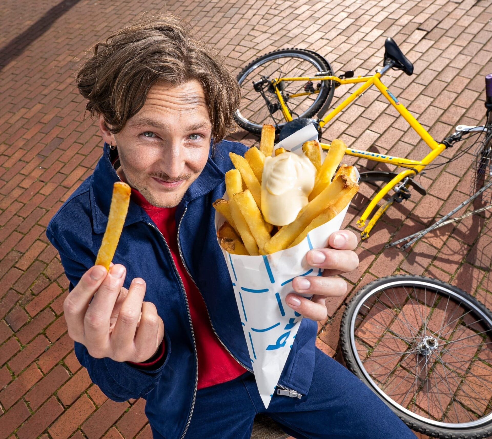
| 営業時間 | 月〜木・土 11:00〜19:00／金 11:00〜20:00／日 12:00〜19:00 |
|---|---|
| 定休日 | なし |
| 住所 | Paradijspoort 8, 2611 MB Delft |
| 予約 | 不要 — ☎ +31 15 212 9544 ／ 公式サイト |
| 乳児連れ | ベビーカー: 未確認 ／ ハイチェア: 未確認 ／ おむつ替え台: 未確認 |
| 営業時間 | 月〜土 8:00〜18:00／日 9:00〜17:00 |
|---|---|
| 定休日 | なし |
| 住所 | Choorstraat 9, 2611 JD Delft |
| 予約 | 不要 — ☎ +31 15 212 3755 ／ 公式サイト |
| 乳児連れ | ベビーカー: 未確認 ／ ハイチェア: 未確認 ／ おむつ替え台: 未確認 |
| 営業時間 | 水〜日 10:00〜17:30 |
|---|---|
| 定休日 | 月・火 |
| 住所 | Markt 37B, 2611 GR Delft |
| 予約 | 不要 — ☎ +31 15 364 9671 ／ 公式サイト |
| 乳児連れ | ベビーカー: 未確認 ／ ハイチェア: 未確認 ／ おむつ替え台: 未確認 |
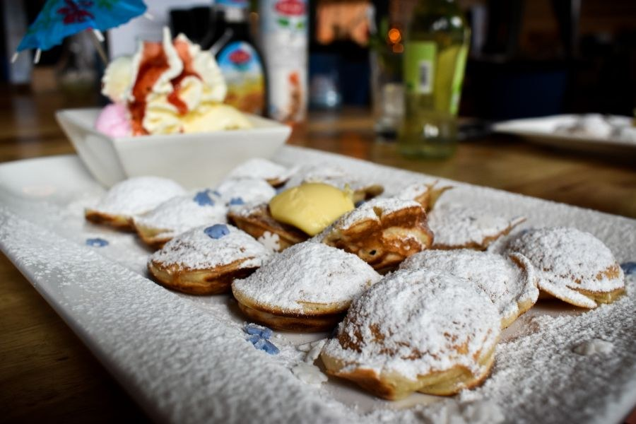
| 営業時間 | 毎日 9:00〜22:00 |
|---|---|
| 定休日 | なし |
| 住所 | Martinus Nijhofflaan 476, 2624 MH Delft（De Hoven Passage） |
| 予約 | 可 — ☎ +31 15 720 0809 ／ 公式サイト |
| 乳児連れ | ベビーカー: 未確認 ／ ハイチェア: 未確認 ／ おむつ替え台: 未確認 (出典) |
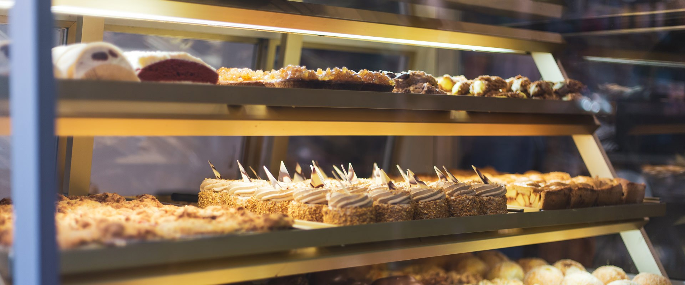
| 営業時間 | 火〜土 8:00〜17:00／日 12:00〜17:00 |
|---|---|
| 定休日 | 月 |
| 住所 | Hippolytusbuurt 22-24, 2611 HN Delft |
| 予約 | 可（ハイティーは推奨・未確認） — ☎ +31 15 212 5726 ／ 公式サイト |
| 乳児連れ | ベビーカー: 未確認 ／ ハイチェア: 未確認 ／ おむつ替え台: 未確認 (出典) |
| 営業時間 | 毎日 12:30〜20:30（季節営業の可能性あり・未確認） |
|---|---|
| 定休日 | 未確認（冬季休業の有無を要確認） |
| 住所 | Julianalaan 37, 2628 BB Delft |
| 予約 | 不要 |
| 乳児連れ | ベビーカー: 未確認 ／ ハイチェア: 未確認 ／ おむつ替え台: 未確認 |
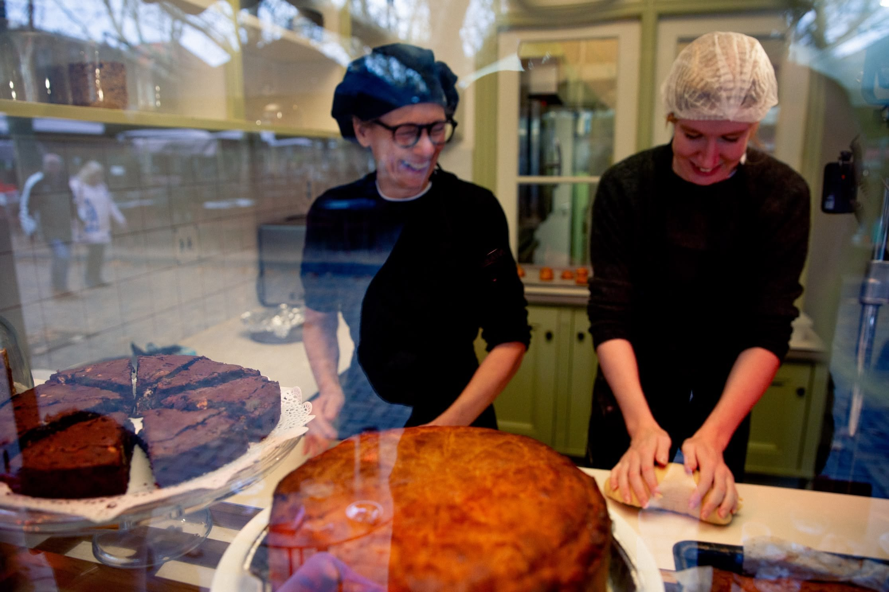
| 営業時間 | 月 9:00〜23:00／火〜木 9:00〜24:00／金土 9:00〜翌1:00／日 9:00〜23:00 |
|---|---|
| 定休日 | なし（無休） |
| 住所 | Beestenmarkt 1, 2611 GA Delft |
| 予約 | 不可（公式サイトに「予約より飛び込み歓迎」と記載） — ☎ +31 15 212 4280 ／ 公式サイト |
| 乳児連れ | ベビーカー: 未確認 ／ ハイチェア: 未確認 ／ おむつ替え台: 未確認 |
| 営業時間 | 月・水〜日 8:30〜16:30（キッチンとジュースバーは16:00まで） |
|---|---|
| 定休日 | 火曜 |
| 住所 | Voldersgracht 27, 2611 EV Delft |
| 予約 | 不可（公式：予約・グループ予約なし） — ☎ +31 15 750 3253 ／ 公式サイト |
| 乳児連れ | ベビーカー: 未確認 ／ ハイチェア: 未確認 ／ おむつ替え台: 未確認 |
| 営業時間 | 土 9:00〜17:00 |
|---|---|
| 定休日 | 日〜金（In Delft 公式観光サイトの掲載時間。過去は水〜土営業） |
| 住所 | Voorstraat 7, 2611 JJ Delft |
| 予約 | 不要 — ☎ +31 15 241 0014 ／ 公式サイト |
| 乳児連れ | ベビーカー: 未確認 ／ ハイチェア: 未確認 ／ おむつ替え台: 未確認 |
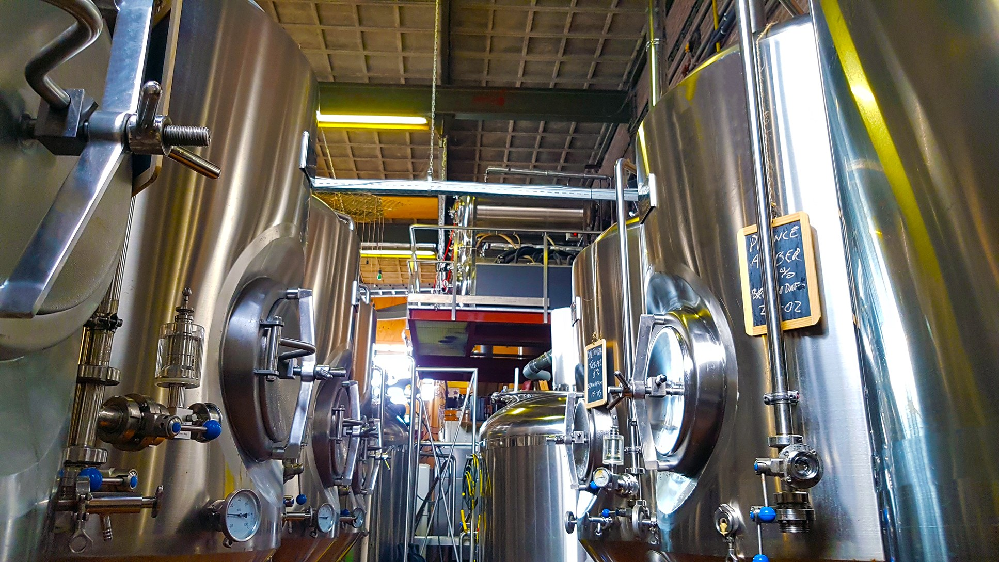
| 営業時間 | 木 21:00〜翌3:00／金 16:00〜21:00／土日 14:00〜20:00（公式の proeflokaal 時間。夏季は木曜が15時から） |
|---|---|
| 定休日 | 月〜水 |
| 住所 | Schieweg 15M, 2627 AN Delft |
| 予約 | 可（reserveringen@dekoperenkat.nl） — ☎ +31 6 42 12 33 98 ／ 公式サイト |
| 乳児連れ | ベビーカー: 未確認 ／ ハイチェア: 未確認 ／ おむつ替え台: 未確認 |
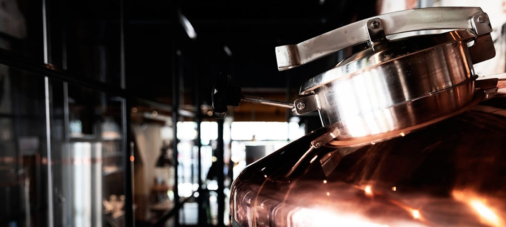
| 営業時間 | 月〜木・日 11:00〜翌1:00／金土 11:00〜翌2:00（キッチン 11:00〜21:30） |
|---|---|
| 定休日 | なし（無休） |
| 住所 | Hippolytusbuurt 43, 2611 HM Delft |
| 予約 | 推奨 — 公式サイト ／ 予約サイト |
| 乳児連れ | ベビーカー: 未確認 ／ ハイチェア: 未確認 ／ おむつ替え台: 未確認 |
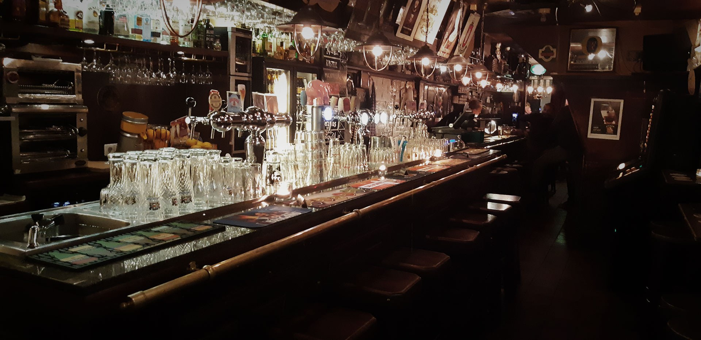
| 営業時間 | 未確認（公式サイトに記載なし。Wanderlog 掲載の Google 情報では毎日昼〜深夜） |
|---|---|
| 定休日 | 未確認 |
| 住所 | Brabantse Turfmarkt 67, 2611 CM Delft |
| 予約 | 可（来店30分前から電話のみ） — ☎ +31 15 213 4632 ／ 公式サイト |
| 乳児連れ | ベビーカー: 未確認 ／ ハイチェア: 未確認 ／ おむつ替え台: 未確認 |
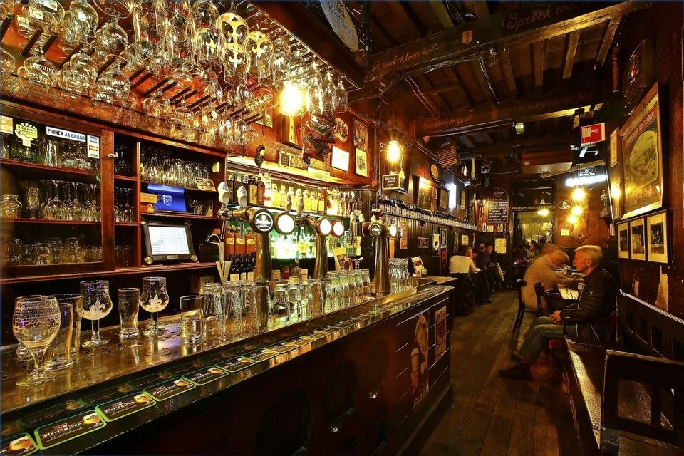
| 営業時間 | 火〜土 16:00〜翌1:00（In Delft 掲載。Google 情報では水〜土は12:00から） |
|---|---|
| 定休日 | 日・月 |
| 住所 | Binnenwatersloot 5, 2611 BJ Delft |
| 予約 | 不可（公式：予約・大人数不可） — ☎ +31 6 5060 1946 ／ 公式サイト |
| 乳児連れ | ベビーカー: 未確認 ／ ハイチェア: 未確認 ／ おむつ替え台: 未確認 |
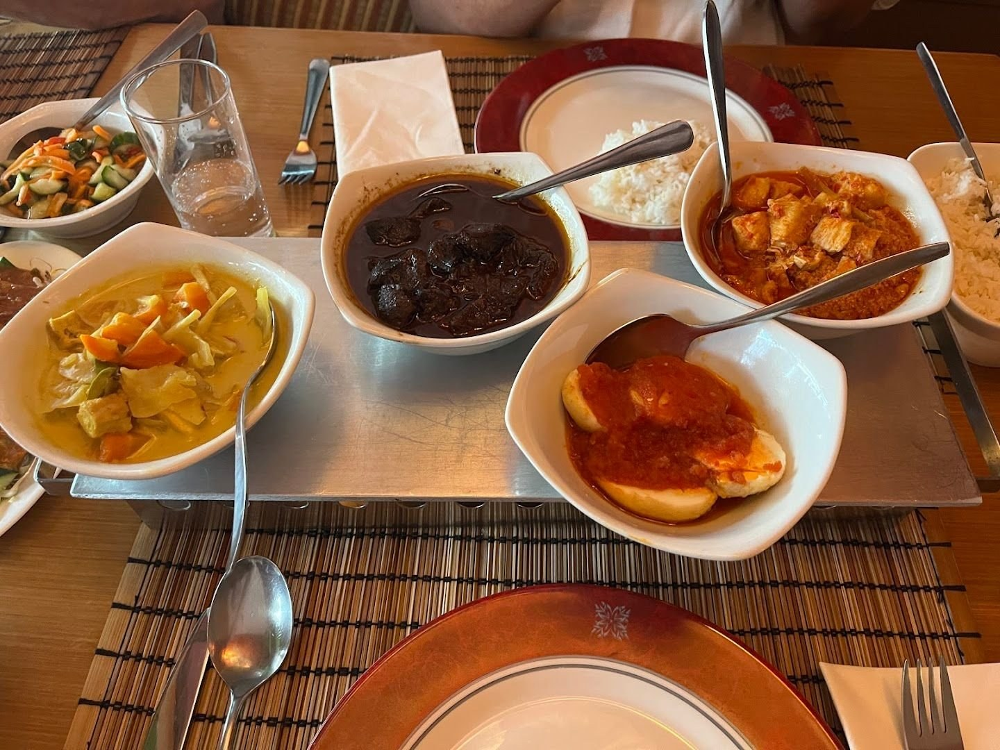
| 営業時間 | 火〜土 12:00〜22:00／日 16:00〜22:00 |
|---|---|
| 定休日 | 月曜 |
| 住所 | Choorstraat 50-56, 2611 JH Delft |
| 予約 | 推奨（電話） — ☎ +31 15 212 5022 ／ 公式サイト |
| 乳児連れ | ベビーカー: 未確認 ／ ハイチェア: 未確認 ／ おむつ替え台: 未確認 |
| 営業時間 | 火〜土 12:00〜20:00／日 15:00〜20:00 |
|---|---|
| 定休日 | 月曜 |
| 住所 | Brabantse Turfmarkt 32a, 2611 CN Delft |
| 予約 | 不要 — ☎ +31 6 20566755 ／ 公式サイト |
| 乳児連れ | ベビーカー: 未確認 ／ ハイチェア: 未確認 ／ おむつ替え台: 未確認 |
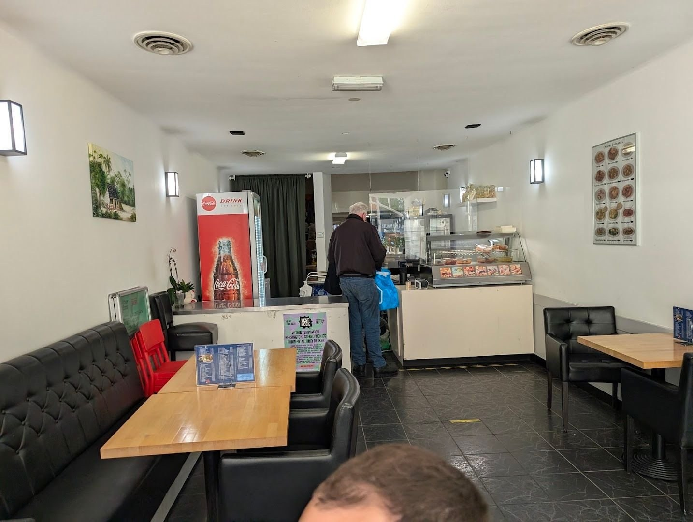
| 営業時間 | 月〜土 12:00〜20:30／日 15:00〜20:30（In Delft 掲載） |
|---|---|
| 定休日 | なし（他媒体では月曜休みの記載もあり、要確認） |
| 住所 | Binnenwatersloot 7, 2611 BJ Delft |
| 予約 | 不要 — ☎ +31 15 302 00 00 ／ 公式サイト |
| 乳児連れ | ベビーカー: 未確認 ／ ハイチェア: 未確認 ／ おむつ替え台: 未確認 |
| 営業時間 | 火〜日 16:00〜23:00 |
|---|---|
| 定休日 | 月曜 |
| 住所 | Oude Delft 78, 2611 CD Delft |
| 予約 | 推奨（口コミに夕食は予約で埋まる記述） — ☎ +31 15 212 0950 ／ 公式サイト |
| 乳児連れ | ベビーカー: 未確認 ／ ハイチェア: 未確認 ／ おむつ替え台: 未確認 |
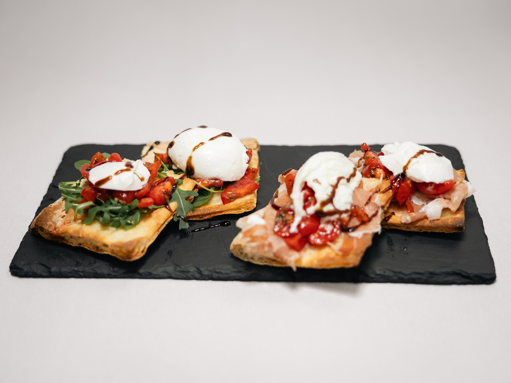
| 営業時間 | 火〜日 17:00〜22:00（キッチン21:30まで） |
|---|---|
| 定休日 | 月曜 |
| 住所 | Markt 33, 2611 GR Delft |
| 予約 | 可（公式サイトの Tebi 予約） — ☎ +31 15 785 2492 ／ 公式サイト |
| 乳児連れ | ベビーカー: 未確認 ／ ハイチェア: 未確認 ／ おむつ替え台: 未確認 |
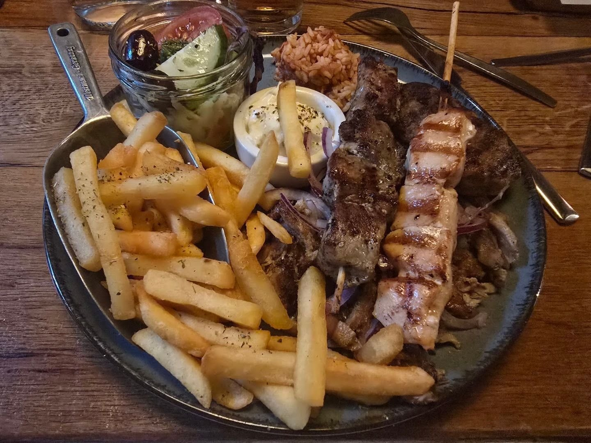
| 営業時間 | 月・火・木・金 16:00〜22:00／土 12:00〜22:00／日 12:00〜21:00（Google 情報） |
|---|---|
| 定休日 | 水曜 |
| 住所 | Verwersdijk 32, 2611 NH Delft |
| 予約 | 推奨 — ☎ +31 15 213 2982 ／ 公式サイト |
| 乳児連れ | ベビーカー: 未確認 ／ ハイチェア: 未確認 ／ おむつ替え台: 未確認 |
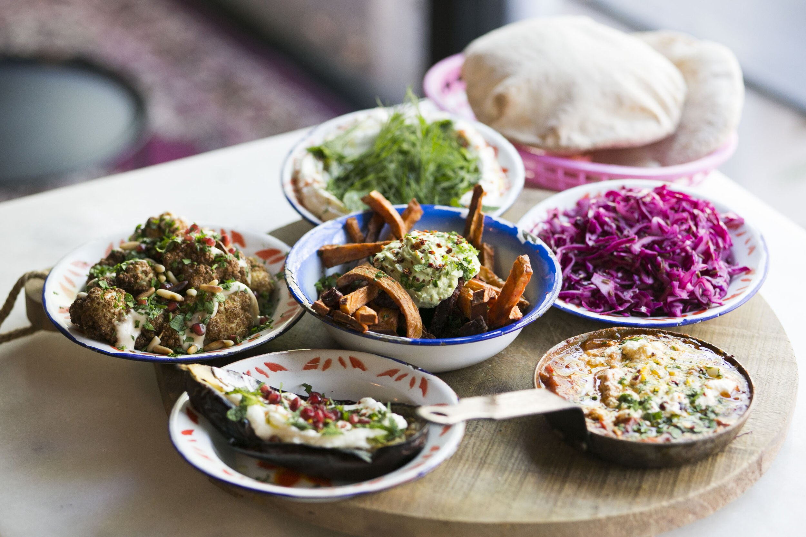
| 営業時間 | 月〜木 17:00〜22:00／金〜日 12:00〜22:00 |
|---|---|
| 定休日 | なし |
| 住所 | Molslaan 39, 2611 RJ Delft |
| 予約 | 推奨（土曜夜は混雑） — ☎ +31 15 879 5252 ／ 公式サイト |
| 乳児連れ | ベビーカー: 未確認 ／ ハイチェア: 未確認 ／ おむつ替え台: 未確認 |
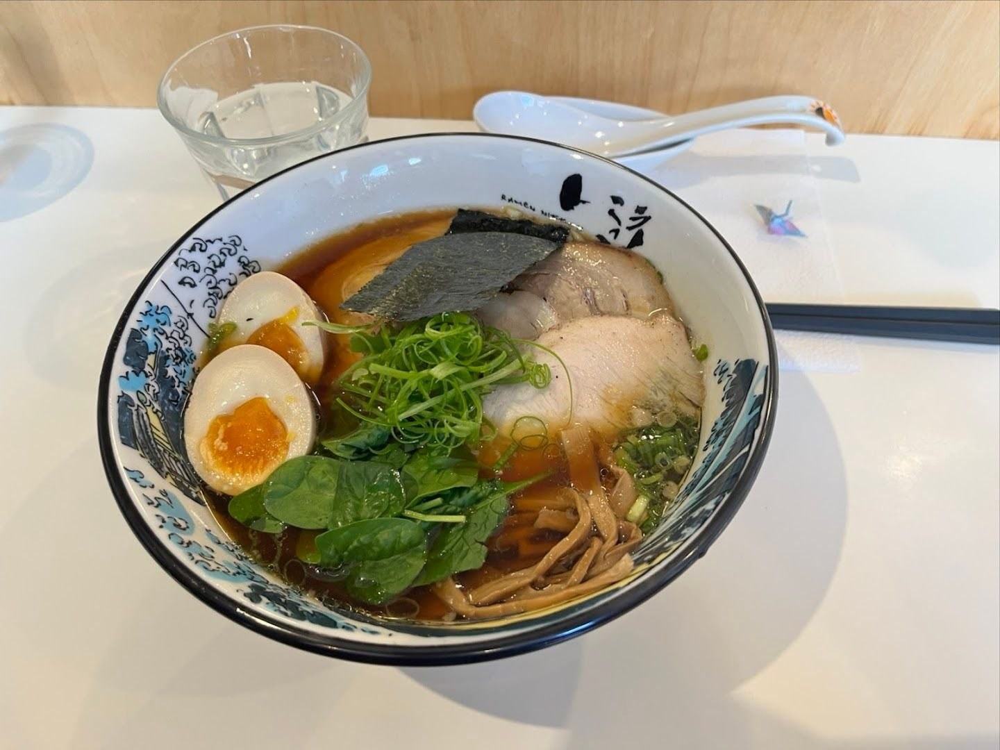
| 営業時間 | 水 17:00〜21:00／木〜土 12:00〜14:00・17:00〜21:00 |
|---|---|
| 定休日 | 日〜火 |
| 住所 | Oosteinde 199, 2611 VE Delft |
| 予約 | 不可（口コミ：walk-ins only） — 公式サイト |
| 乳児連れ | ベビーカー: 未確認 ／ ハイチェア: 未確認 ／ おむつ替え台: 未確認 (出典) |
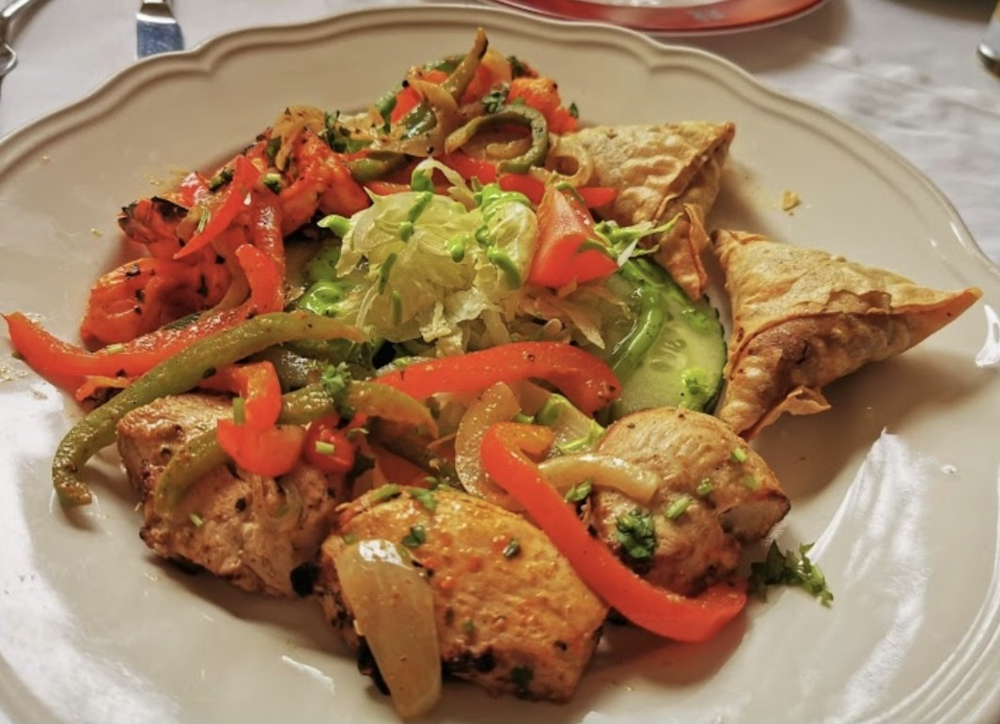
| 営業時間 | 火〜日 17:00〜22:00 |
|---|---|
| 定休日 | 月曜 |
| 住所 | Nieuwe Langendijk 59, 2611 VJ Delft |
| 予約 | 可（オンライン・電話） — ☎ +31 15 212 8989 ／ 公式サイト |
| 乳児連れ | ベビーカー: 未確認 ／ ハイチェア: 未確認 ／ おむつ替え台: 未確認 |
| 営業時間 | 火〜木 17:00〜22:00／金土 11:00〜22:00（公式サイト。最新は Google を確認するよう注記あり） |
|---|---|
| 定休日 | 日・月 |
| 住所 | Phoenixstraat 54, 2611 AM Delft |
| 予約 | 推奨（電話・メール） — ☎ +31 6 27397534 ／ 公式サイト |
| 乳児連れ | ベビーカー: 未確認 ／ ハイチェア: 未確認 ／ おむつ替え台: 未確認 |
本ガイドは個人利用目的で作成。掲載情報は2026年9月時点の調査に基づく。写真出典: 各店の公式サイト・公式SNS、観光局、ローカルメディア・在住者ブログ等の掲載写真（著作権は各サイト・各撮影者に帰属）。引用元は店ごとにカード内へ明記。